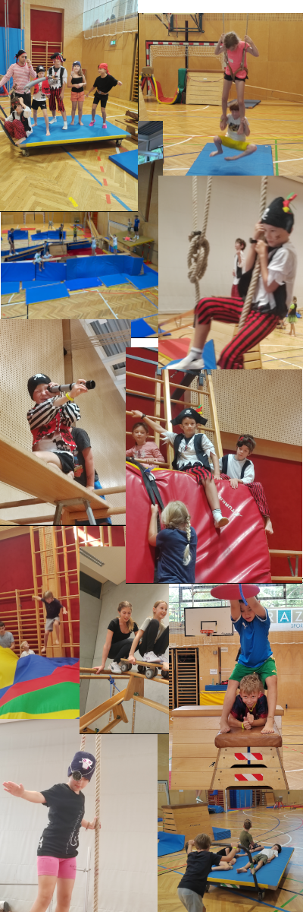

Motopädagogisches Abenteuer
Mission: Das Piraten-Abenteuer
Hisst die Flagge und geht an Bord! Wir verwandeln den Turnsaal oder das Schulgelände in eine geheimnisvolle Schatzinsel. Anhand einer alten Schatzkarte entschlüsselt die Klasse Hinweise, löst Rätsel und meistert körperliche wie geistige Herausforderungen. Über drei Termine wird sie Schritt für Schritt zur eingeschworenen Crew, die den Schatz nur gemeinsam bergen kann.
Teamfähigkeit & KooperationDie Klasse erlebt, dass sie nur als geschlossene Crew erfolgreich ist.
Kreative ProblemlösungBeim Entschlüsseln von Hinweisen sind neue Ideen gefragt.
Kommunikation & AbsprachenKlare Kommunikation ist der Schlüssel zum Erfolg der Mission.
RollenverständnisKinder übernehmen spielerisch Verantwortung und wachsen daran.
Schulstufe1.–4. Volksschule, 1. & 2. Unterstufe
Dauer3 Doppelstunden an 3 Terminen
Preis€ 15,– pro Kind und Einheit
OrtTurnsaal, Freigelände